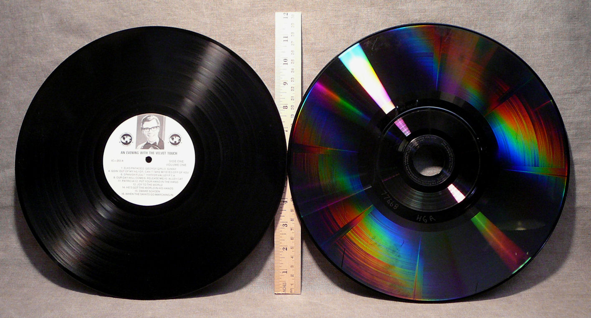
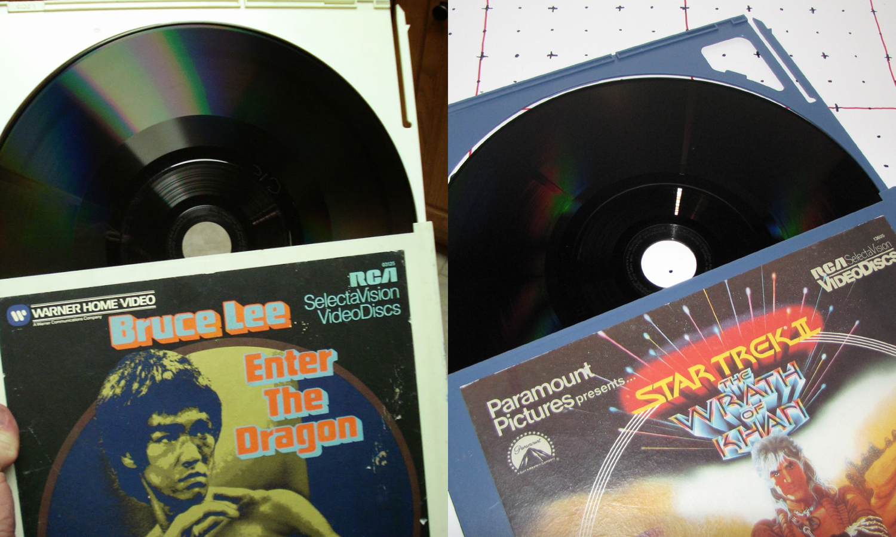
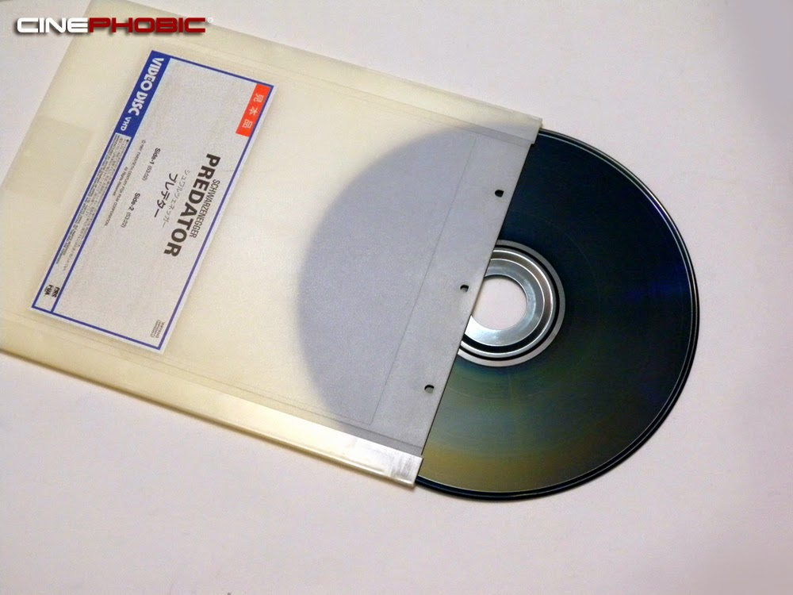
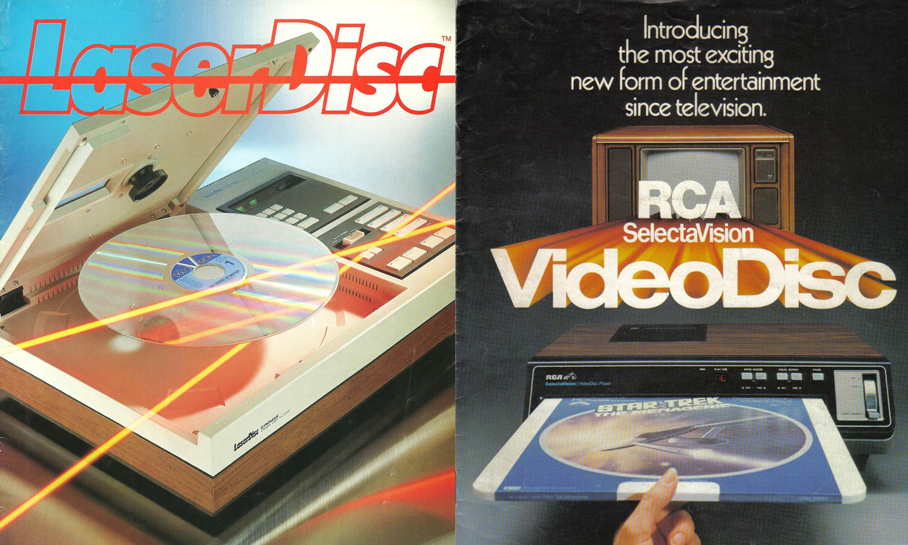
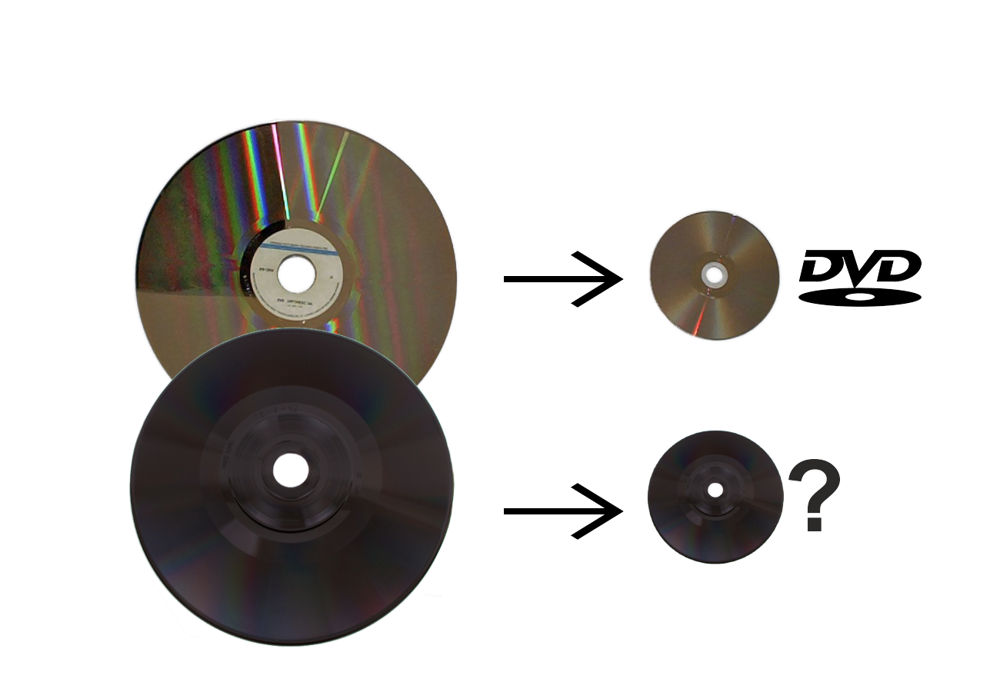
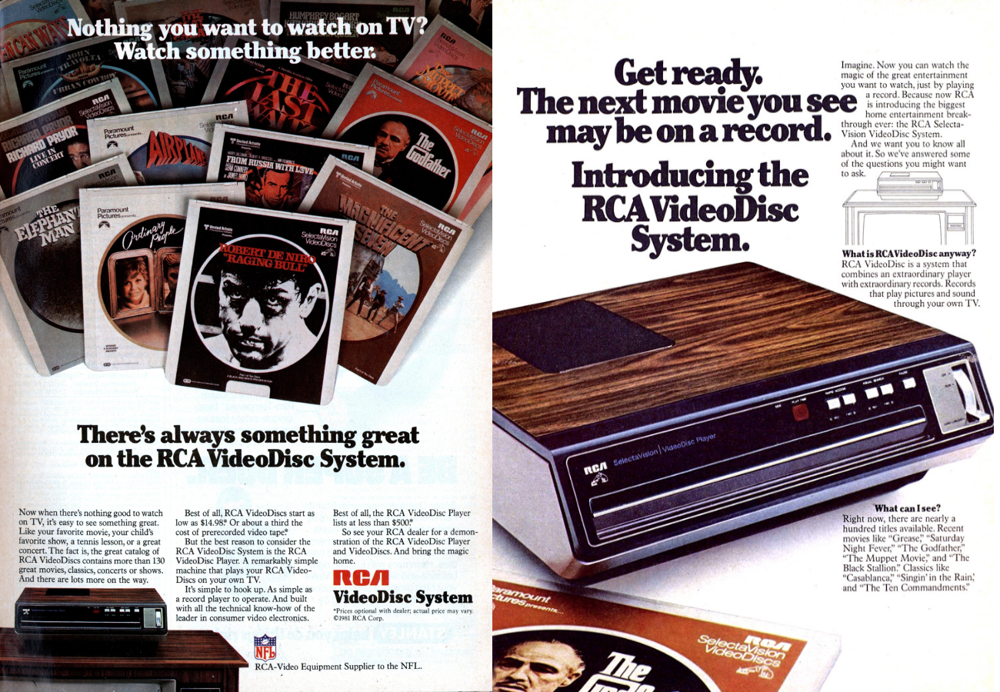

The Forgeotten VideoDiscs
by Jaeden Laffey
Capacitance VideoDiscs
RCA's Capacitance Electronic Disc (CED)
JVC's Video High Density (VHD)
Behind the VideoDisc

- VideoDiscs & Vinyl Records
Creation of the Capacitance VideoDisc
About Capacitance

- “Capacitance = the ability of two adjacent conductors to store electric charge"
About the tech: CED

- 25cm in diameter. 30min of video on each side
About the tech: VHD

- 25cm in diameter, up to 1 hour of video on each side
Product Release
Using the technology

Alternative histories

Alternative histories

From our present day view:
From our present day view:

Cultural context